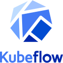

Technologies Worked With





Local, license-safe placeholders are bundled. If a file is missing, the page auto-falls back to Simple Icons CDN at runtime.
With eight years of hands-on experience as a passionate machine learning engineer, I am driven by an enduring curiosity to learn, improve, and work on the cutting edge of technology. My journey began in academia in 2013, and since then, I have contributed to impactful projects spanning deep learning, computer vision, natural language processing, and generative AI. I have worked across the entire workflow, from model development to deployment, always striving to keep pace with the latest advances...
Replace assets/images/anirudh.jpg with your photo to update the avatar.
Worked on detecting personality types from vlogs using multimodal inputs.
Local, license-safe placeholders are bundled. If a file is missing, the page auto-falls back to Simple Icons CDN at runtime.
Tip: hover the icons or use keyboard focus to see the subtle animation. External links open in a new tab.